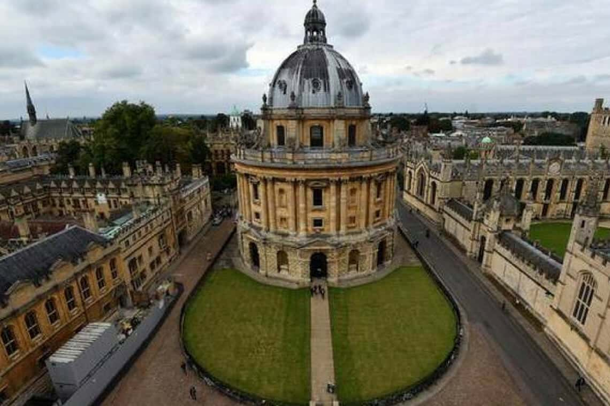

Vida no campus

igreja da escola
1096
É a mais antiga universidade do mundo anglófono e a segunda mais antiga da Europa.

Biblioteca da escola
foi fundada em 1980
A Biblioteca Bodleiana (em inglês: Bodleian Library) é a principal biblioteca de pesquisa da Universidade de Oxford.

Auditório da escola
Foi fundado 1982
Conquistas da escola
A universidade mais antiga em língua inglesa, fundada em 1090, é a primeira no ranking de melhores universidades do mundo.